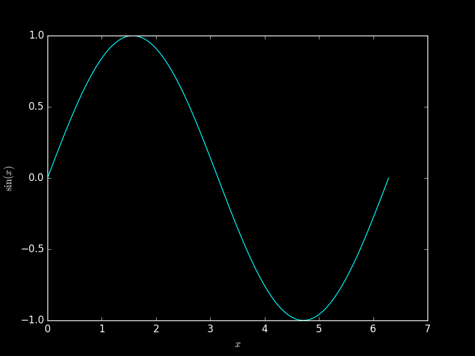

Plotting simple sin function on a black background¶
A simple example of the plot of a sin function on a black background
# Code source: Loïc Estève
# License: BSD 3 clause
import numpy as np
import matplotlib.pyplot as plt
bg_color = 'black'
fg_color = 'white'
fig = plt.figure(facecolor=bg_color, edgecolor=fg_color)
axes = plt.axes((0.1, 0.1, 0.8, 0.8), axisbg=bg_color)
axes.xaxis.set_tick_params(color=fg_color, labelcolor=fg_color)
axes.yaxis.set_tick_params(color=fg_color, labelcolor=fg_color)
for spine in axes.spines.values():
spine.set_color(fg_color)
x = np.linspace(0, 2 * np.pi, 100)
y = np.sin(x)
plt.plot(x, y, 'cyan', axes=axes)
plt.xlabel('$x$', color=fg_color)
plt.ylabel('$\sin(x)$', color=fg_color)
plt.show()
Total running time of the script: ( 0 minutes 0.120 seconds)